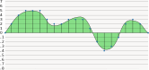

How do AudioClips work?
An AudioClip is a collection of samples, which are numbers, each one representing a single part of the sound wave in the clip. Most audio clips will have many samples, often in the hundreds of thousands or higher, depending on the sample rate and the duration. Each sample is a number, positive or negative, and can be of varying sizes depending on the bit depth. Specifically, they represent the height (or depth) of a specific point on a sound wave. Currently, you can generate an AudioClip by setting the samples individually or from a WAV file.
The AudioClip object will also have a sample count, a channel count, a bit depth, and a sample rate. The sample count is the total number of samples in the clip, which is a function of the duration and the sample rate of the clip. The channel count is the number of “channels”, or continuous streams of samples. With multiple channels, you can play different sound waves simultaneously, which is used for things like stereo audio (a different wave for each ear). The bit depth is the size of each sample, which has an effect on the quality (16 is CD quality, for example). Finally, sample rate is the frequency at which samples are taken from the sound wave, in hertz. A higher sample rate means more samples are taken per second, which means higher quality. CDs use a sample rate of 44,100Hz.
Below is an example of how samples are taken from an audio clip.
At every slice in time, a sample is taken that is a measure of the height of that part of the sound wave.
In the example below, the first sample is 0, the second is 2, the third is 4, and so on.
The sample count is 21, meaning there are 21 slices taken.
The image represents a single channel, but the audio clip could have multiple channels by having multiple waves simultaneously.
The bit depth in this image is 4, meaning the size of each number is 4 bits (2^4 or 16 options for the height of the wave.
Note that the minimum bit depth supported by BRIDGES is 8, 4 bits is simply for example’s sake.
The sample rate is the number of samples taken per second, so if this clip were a second long, the sample rate would be 21Hz.
This is extremely low, a real audio clip would likely not have less than 8,000Hz, or 8,000 samples per second, for its sample rate.

Creating an Audio Clip - BRIDGES Example
Example Details
- This example illustrates the process of creating an audio clip from scratch
- Sample values can be set individually by using the setSample(channel, index, value) method.
- In the example, we’ll create an audio clip, then iterate over it and set each sample according to a specific mathematical function to make a sine wave.
Here is the final code:
Bridges Visualization
- Once all your code is in order, run your program.
- Assuming all your code is correct and it compiles correctly, a link to the Bridges website will be generated.
- Copy/paste this link into your favorite browser to view a visualization of the data structure you’ve just created.
- It should look something like this:
Manipulating an Audio Clip - BRIDGES Example
Example Details
- This example illustrates manipulation of an audio clip by changing sample values.
- Sample values can be found by using the getSample(channel, index) method.
- In the example, each sample in the clip is divided by two, which halves the volume of each sample and in turn the entire clip.
Here is the final code:
Bridges Visualization
- Once all your code is in order, run your program.
- Assuming all your code is correct and it compiles correctly, a link to the Bridges website will be generated.
- Copy/paste this link into your favorite browser to view a visualization of the data structure you’ve just created.
- It should look something like this:
Well done! You’ve just created your Bridges Audio Clip project!